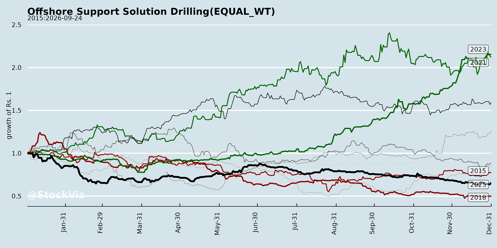
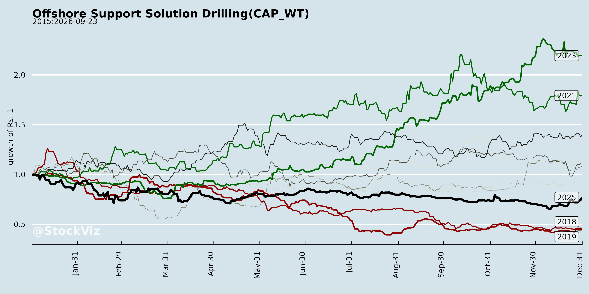
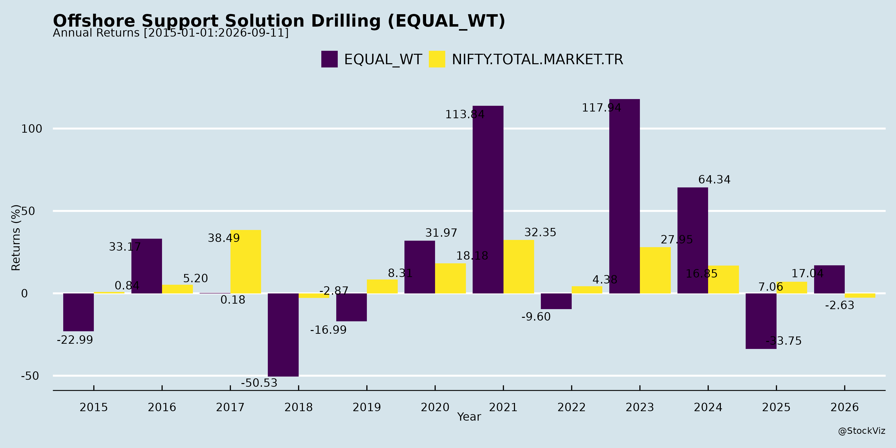
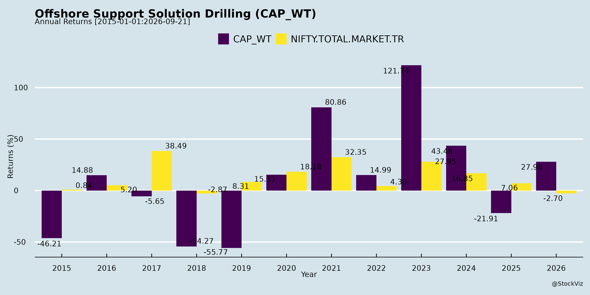
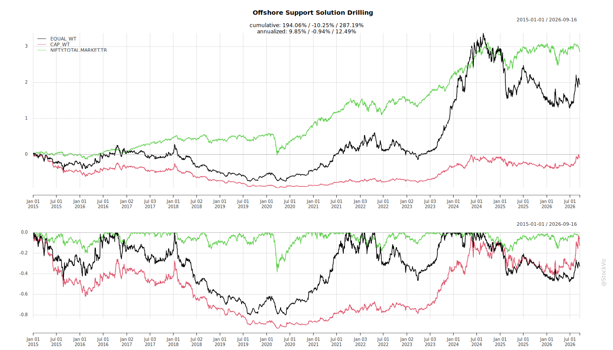
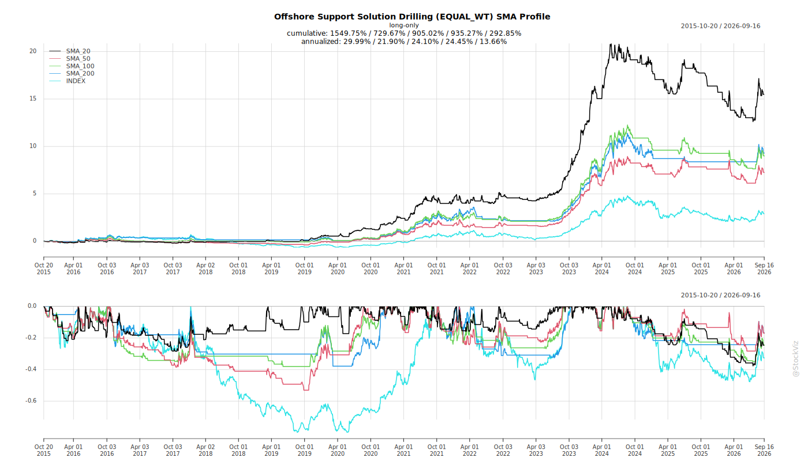
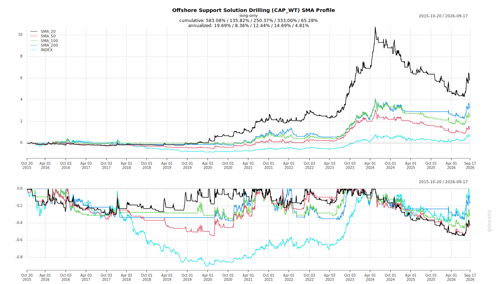
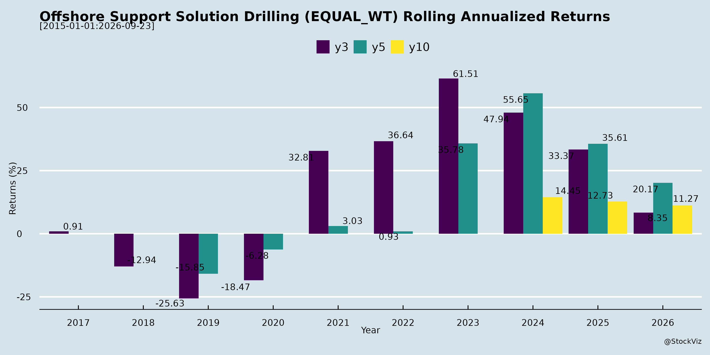
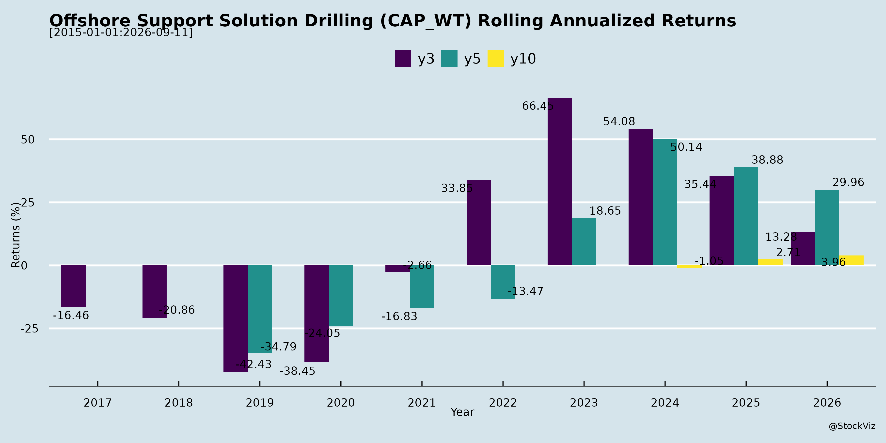

Annual Returns




Cumulative Returns and Drawdowns

SMA Scenarios


Current Distance from SMA
Rolling Returns


EBIT (% of Industry Total)
Revenue (% of Industry Total)
AI Summaries
Analyst
asof: 2025-11-27
Summary Analysis: Jindal Drilling & Industries Ltd. (JDIL) in Indian Offshore Drilling Sector
JDIL is a leading Indian offshore drilling services provider, primarily serving ONGC with 5 owned jack-up rigs (post-Pioneer acquisition). Q2 FY26 showed resilient operations (EBITDA ~INR 93 Cr, net cash INR 295 Cr), boosted by a one-time INR 100 Cr arbitration win. Below is an analysis of headwinds, tailwinds, growth prospects, and key risks, based on the earnings call transcript.
Tailwinds (Positive Factors)
- Strong Balance Sheet: Net cash at INR 295 Cr (up from INR 111 Cr in Mar 2025), zero debt, and cash inflows from operations/litigation enabling refurbishments without borrowing.
- Owned Fleet: Full ownership of rigs (e.g., Pioneer at $75M) eliminates rental costs; rig values rising due to global supply constraints (no new builds, aging fleet).
- Natural Forex Hedge: Dollar-denominated revenues/expenses; rupee depreciation is accretive.
- Operational Efficiency: 35+ years with ONGC, high safety/uptime; ancillary services (mud logging, directional drilling) diversifying revenue.
- Order Book Visibility: Firm contracts through FY27; Explorer redeploying soon, enabling 5 rigs operational by Nov 2025.
Headwinds (Challenges)
- Low Day Rates from Competition: Contracts at $35k-37k/day (e.g., Explorer) vs. industry $70k-90k; repeated matching of aggressive bids erodes margins (Q2 EBITDA margin ~39%, guidance 35%).
- Downtime & Refurb Costs: Dehire/refurb of Explorer/Pioneer caused Q2 EBITDA dip; 3 rigs (Discovery-I, Virtue-I, Star) need FY27 refurb (INR 240-250 Cr total, 4-6 months downtime each).
- Slow Tender Pace: ONGC issuing fewer tenders than expected; high domestic competition caps pricing power.
- Forex Volatility: Short-term rupee appreciation/dollar weakness could hurt (though partially hedged).
Growth Prospects
- Tender Opportunities: Bidding ONGC’s 4-rig tender (due Dec 2025) for Pioneer at targeted $55k-65k/day (3-year term); potential re-contracts for expiring rigs (e.g., Discovery-I) at higher rates.
- Demand Tailwinds: Rising Indian oil/gas capex; ONGC-BP exploration partnership could boost activity. International bids eyed for better rates (despite higher opex).
- Fleet Expansion/Utilization: Pioneer ready Q4 FY26; directional drilling tender won; exploring adjacent drilling segments.
- Margin Expansion: Post-refurb contracts could stabilize/improve EBITDA margins to 35%+ if rates rise; rig scarcity supports pricing over FY27-28.
- Order Book Build: Visibility to FY27; new tenders post-dehire could extend to FY28 at improved economics.
Key Risks
- ONGC Dependence/Competition: ~100% revenue from ONGC; tender losses or prolonged low bids could stagnate growth (e.g., recent $35k matching).
- Capex Execution: Refurb delays/cost overruns (INR 70-120 Cr/rig, amortized over contracts); 3 rigs offline in FY27 risks revenue gaps.
- Macro/Policy: Stagnant oil/gas spending if ONGC-BP talks falter; dedollarization or sharp dollar devaluation (e.g., USD/INR to 70-75) impacts unhedged portions.
- No New Rigs: No FY27-28 acquisitions planned; fleet static amid rising demand risks missed opportunities.
- Litigation Echo: No pending cases now, but past 15-year delays highlight execution risks.
Overall Outlook: JDIL’s debt-free, cash-rich position provides resilience, with growth hinging on higher-rate tenders and oil/gas capex upcycle. FY26-27 stable (5 rigs, 35% margins); FY28+ upside from re-contracts/international if competition eases. Risks tilted toward pricing/downtime, but strong fundamentals mitigate. NAV proxies: Rigs valued ~$75M each (newer ones), implying embedded asset upside.
Financial
asof: 2025-11-27
Summary Analysis: Indian Offshore Support, Solutions, and Drilling Sector
The provided documents cover Q3/H1 FY25 financial results (ended Dec 2024/Sep 2025) for key players: Aakash Exploration (services), Aban Offshore (drilling), Alpha Geo (geophysical surveys), Dolphin Offshore (support services), and Jindal Drilling (drilling & JVs). The sector shows polarization: Jindal and Dolphin exhibit strength amid contract execution, while Aban faces existential threats, and Aakash/Alpha struggle with margins/revenue. Overall, modest revenue stability but profitability challenged by costs/debt. Analysis below categorizes headwinds, tailwinds, growth prospects, and key risks.
Tailwinds (Positive Factors)
- Contract Momentum & Revenue Visibility: Jindal Drilling reported robust Q3 revenue (~₹340 Cr standalone, flat YoY but strong execution); Dolphin showed Q3 revenue of ₹113 Cr with 276L profit. Indicates steady offshore demand from ONGC/PSUs amid India’s push for domestic E&P (e.g., OALP bids).
- JV/Subsidiary Contributions: Jindal’s consolidated profits boosted by JVs (e.g., Discovery/Virtue Drilling: ₹567 Cr share in 9M FY25). Alpha Geo’s offshore sub (Alphageo Offshore) provides diversification.
- Foreign Exchange Gains: Recurring tailwind (Jindal: ₹151 Cr in 9M; Aakash/Dolphin minor). Rupee depreciation supports USD-denominated contracts/loans.
- Capex for Capacity: Aakash invested heavily (PPE up 13% to ₹691 Cr), positioning for future utilization upticks.
- Policy Support: Implicit via SEBI compliance focus; India’s 7.2% GDP growth and energy security drive offshore activity.
Headwinds (Challenges)
- Profitability Squeeze: Low margins pervasive. Aakash: H1 PBT ₹109L on ₹487 Cr rev (0.2% margin); Alpha Geo: 9M loss ₹312L standalone (revenue down 37% Q3 YoY); Aban: Q3 loss ₹35L, 9M profit ₹166 Cr but from one-off other income (ongoing erosion).
- High Operating Costs: Employee/depreciation heavy (Aakash: 38%+ of expenses; Jindal: dep up 66% Q3 YoY). Fuel/inflation hits ops (Aban “other exp” ₹167L Q3).
- Debt Burden & Cash Burn: Aban: Defaults on ₹4,021 Cr loans, negative net worth (₹11,636 Cr erosion), no bank confirmations. Aakash: Negative operating CF in investing phase (₹885 Cr outflow 9M). Jindal better but finance costs steady (₹13 Cr Q3).
- Revenue Volatility: Alpha Geo Q3 rev halved YoY (₹112 Cr); Aban ops rev low (₹335L Q3, cyclical downtime).
- Auditor Flags: Aban: Qualified review (bank confirmations missing, going concern doubt); Alpha: FEMA/tax contingencies (₹23 Cr potential liability).
Growth Prospects
- Medium-Term Demand Surge: India’s offshore acreage expansion (e.g., KG basin) favors drillers/supports. Jindal’s rig utilization implies 20-30% sector growth if oil >$70/bbl. Dolphin/Aakash capex signals tender wins.
- Consolidation/Recovery Plays: Aban debt resolution could unlock value (discussions ongoing). Alpha Geo’s geophysical niche ties to upstream capex cycle.
- EBITDA Trajectory: Jindal 9M PBT ₹117 Cr (+7% YoY); sector avg could hit 15-20% margins with 10-15% rev growth FY26 on O&G investments (₹1L Cr+ domestic E&P).
- Export/Intl Exposure: Jindal/Alpha JVs in Singapore/Intl ops provide USD hedge; potential Middle East/Africa spillover.
- Valuation Upside: Profitable peers (Jindal EPS ₹30+ 9M) trade at 1-2x sales; recovery in laggards could yield 50%+ rerating.
Key Risks
| Financial (High) |
Debt defaults (Aban: ₹4 Bn+), negative CF/capex drag (Aakash), contingent liabilities (Alpha: FEMA/tax ₹25 Cr+). |
Aban, Aakash, Alpha |
Critical (insolvency risk for Aban) |
| Operational (Medium-High) |
Low rig utilization/downtime (Aban rev <₹1 Bn/9M), forex volatility (Jindal gains could reverse). |
All |
Delays contracts |
| Regulatory/Legal (Medium) |
Auditor qualifications (no bank conf.), FEMA seizures (Alpha ₹16 Cr FD), tax disputes. |
Aban, Alpha |
Cash tied up |
| Macro (Medium) |
Oil price crash (<$60/bbl), monsoon delays offshore ops. |
All |
Rev 20-30% drop |
| Execution (Low-Medium) |
JV dependency (Jindal 50% profit from JVs), sub-contractor risks. |
Jindal, Alpha |
Margin erosion |
Overall Outlook: Cautiously Optimistic. Tailwinds from policy/demand outweigh headwinds for leaders (Jindal/Dolphin: buy/hold), but sector fragility evident (Aban: high risk of restructuring). Growth hinges on oil stability (Brent $75+), with 10-15% CAGR FY25-27 possible. Investors: Favor low-debt profitable plays; monitor Aban resolution. Sector P/B ~1x offers value, but volatility persists.
General
asof: 2025-11-27
Analysis of Indian Offshore Support & Drilling Sector
Based on the provided documents (Aban Offshore Ltd in CIRP, Alpha Geo (India) Ltd KYC compliance, and Jindal Drilling & Industries Ltd rig contract), here’s a summary analysis of headwinds, tailwinds, growth prospects, and key risks for the Indian offshore support solutions and drilling sector. Insights are derived directly from the filings, highlighting financial distress in some players contrasted with operational wins.
Headwinds (Negative Pressures)
- Insolvency and Management Vacuum: Aban Offshore (scrip: ABAN) entered CIRP on 01.09.2025 via NCLT order, suspending Board powers (Section 17 IBC). IRP’s authorized signatory died, leaving no active management or RP successor, causing compliance delays (e.g., director resignation disclosure on 18.09.2025). This reflects broader sector stress from debt, creditor actions (e.g., Punjab National Bank petition), and moratoriums (Section 14 IBC) halting operations/financing.
- Compliance and Disclosure Lags: Post-CIRP, companies struggle with regulatory filings (Reg 30 SEBI LODR), eroding investor confidence amid “residual administrative support.”
- Operational Stagnation: No new activity noted; focus on explaining voids rather than execution.
Tailwinds (Positive Momentum)
- Contract Wins with Majors: Jindal Drilling (scrip: JINDRILL) commenced operations on rig ‘Jindal Explorer’ with ONGC (16.11.2025) for 3 years at USD 35,138.71 EDR. Signals steady demand from PSU explorers like ONGC, providing revenue visibility.
- Routine Compliances Signal Stability: Alpha Geo’s proactive KYC push (per SEBI circulars 2024/37 & 81) indicates operational continuity in ancillary services (geophysics/seismic), supporting exploration upstream.
Growth Prospects
- PSU-Driven Demand: Jindal’s ONGC contract underscores potential for multi-year charters in offshore drilling, fueled by India’s O&G exploration push (e.g., deeper water blocks). Day rates ~USD 35k suggest pricing recovery.
- Exploration Ecosystem: Alpha Geo’s KYC intimation ties to demat/KYC mandates, indirectly aiding efficient shareholder bases for fundraising/expansion in support services.
- Recovery Post-CIRP: Aban’s clarification seeks exchange leniency, hinting at potential RP-led revival if resolution plans materialize, unlocking idled assets.
Key Risks
- Financial Distress Cascade: Aban’s insolvency (CIRP admission) highlights debt overhang, creditor aggression, and RP disruptions (e.g., death of signatory), risking asset sales/dilution.
- Regulatory & Disclosure Gaps: Delays in director resignation intimation (DIR-11 filed without notice) expose non-compliance penalties under SEBI LODR amid management voids.
- Operational Dependencies: Heavy reliance on ONGC contracts (Jindal example); any PSU capex cuts or global oil price volatility could idle rigs. KYC non-compliance (Alpha Geo) risks dividend/service blocks.
- Sector-Wide Void: Absence of management in distressed firms (Aban since 01.09.2025) amplifies execution risks, moratoriums, and litigation.
Overall Summary: The sector faces acute headwinds from insolvencies (Aban archetype) but tailwinds from PSU contracts (Jindal). Growth hinges on ONGC-led exploration, with moderate prospects if CIRP resolutions succeed. Key risks center on debt, management gaps, and compliance—investors should monitor NCLT outcomes and day rates closely. Sector remains bifurcated: survivors like Jindal thrive, while distressed players lag.
Investor
asof: 2025-11-27
Analysis of Indian Offshore Drilling Sector (Focus: Jindal Drilling & Industries Ltd. - JDIL)
Using the provided Q2 FY26 Earnings Conference Call transcript as the primary input, this analysis evaluates the Indian offshore drilling sector, with JDIL as a leading proxy (key player supporting ONGC with jack-up rigs, mud logging, and directional drilling). JDIL operates 6 rigs (5 currently with ONGC post-redeployment), owns its fleet outright (no rentals/debt), and benefits from 35+ years of experience. Key themes are derived from management’s commentary on operations, financials, tenders, and market dynamics.
Tailwinds
- Strong Balance Sheet & Cash Flows: Net cash at INR 295 Cr (up from INR 111 Cr in Mar-25), debt-free status, and robust free cash generation despite rig acquisitions/refurbishments. Doubled dividends recently; cash conserved for capex.
- Fleet Ownership & Utilization: Full ownership of rigs (e.g., Discovery-I at $75M, Supreme at $17M, Pioneer at $75M) provides control and upside from rising second-hand values ($70-90M/rig globally). High utilization expected: 5 rigs live by Nov-25, Pioneer targeting Q4 FY26.
- Favorable Global Supply Dynamics: No new rigs building worldwide; older rigs retiring. Limited supply + rising demand could lift day rates and asset values.
- Natural Forex Hedge: Dollar-denominated revenues/opex; rupee depreciation is accretive.
- One-Time Boost & Operational Stability: INR 100 Cr litigation win (ONGC receivable) resolved after 15 years; core EBITDA/PAT resilient (ex-one-time: ~INR 33 Cr PAT).
Headwinds
- Low Day Rates & Competition: Contracts locked at $35-36k/day (e.g., Explorer recontract), far below industry $80k or JDIL’s bid targets ($55-65k). ONGC tenders attract aggressive bidding, delaying rate normalization.
- Operational Downtime: Dehires/refurbishments (e.g., Explorer/Pioneer) caused Q2 EBITDA dip (13% QoQ to INR 93 Cr); margins slipped to 39% (guidance: 35%).
- High Capex Intensity: Refurb costs INR 70-120 Cr/rig (3 rigs in FY27: ~INR 240-250 Cr total), amortized over contracts but strains cash during 4-6 month downtimes.
- Tender Delays: ONGC issuing fewer tenders than expected; visibility limited to FY27 orderbook.
- Forex Volatility: Short-term rupee appreciation/dollar weakness could pressure margins (partial hedging in place).
Growth Prospects
- Tender Pipeline: Bidding ONGC’s 4-rig tender (due Dec-25) for Pioneer; aim for $60k+ rates (3-year firm). Explorer redeploying soon → 5-6 rigs by early CY26.
- Capex Tailwinds: India’s oil/gas exploration push (ONGC-BP tie-up) could drive demand; JDIL positioned as long-term ONGC partner (30+ years).
- Diversification: Expanding directional drilling (recent tender win), mud logging; evaluating international ops (higher rates but opex).
- Fleet Scaling: Historical acquisitions (1 rig in 2019 → 3 owned by 2025) suggest potential for more; rig values rising supports M&A.
- Margin Expansion: Stabilizing at 35%+ EBITDA; higher rates + full utilization could drive FY26-28 revenue growth (orderbook visibility to FY27).
Key Risks
- Tender/Contract Risk: Failure to win bids or at low rates due to competition; fixed-price contracts limit flexibility.
- Client Concentration: Heavy ONGC reliance (~100% revenues); delays in their capex/exploration (e.g., BP deal flux) could idle rigs.
- Macro/Commodity: Oil/gas capex slowdown in India; dedollarization or sharp USD depreciation (e.g., INR 90→75) hits topline (sensitivity pending).
- Execution/Capex Overruns: Refurb delays/cost inflation; 4-6 month downtimes expose to idle cash burn.
- Regulatory/Legal: Past disputes (e.g., 15-year ONGC case) highlight arbitration risks, though now resolved.
Summary
Bull Case (Tailwinds Dominate): JDIL’s debt-free, cash-rich profile + owned fleet positions it for 20-30% revenue growth via tender wins, rate hikes ($35k→$60k+), and India’s E&P push. Orderbook to FY27 + global supply crunch could yield 35%+ margins and rig NAV upside ($200-250M fleet value).
Bear Case (Headwinds/Risks Materialize): Persistent low rates/competition + refurb downtimes cap core PAT at INR 30-50 Cr/qtr; ONGC delays could idle Pioneer, eroding cash (EBITDA <INR 90 Cr).
Overall Outlook: Moderately positive (High single-digit growth FY26-28), hinged on Dec-25 tender success and ONGC capex. Risks tilted operational/macro; monitor Q3 utilization and Pioneer deployment. JDIL trades at a premium to book (strong cash/rig ownership justifies), but competition caps multiples. Investors should track day rates and international bids for re-rating.
Copyright © 2023 SAS Data Analytics Pvt. Ltd. All rights reserved.
🐞